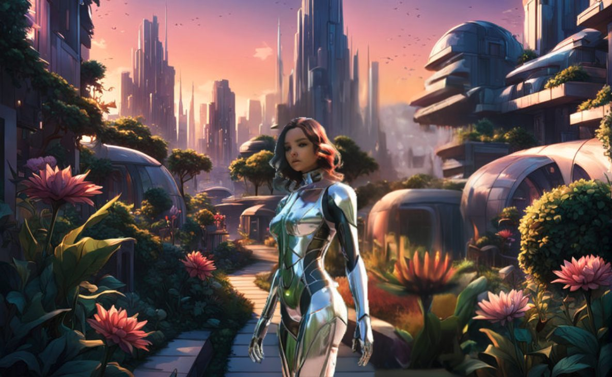
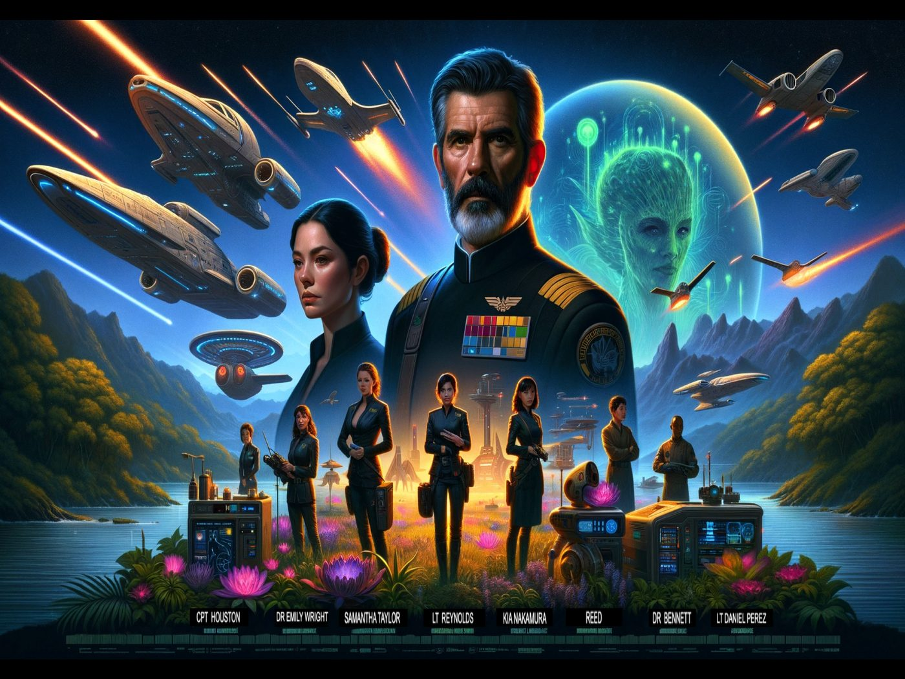
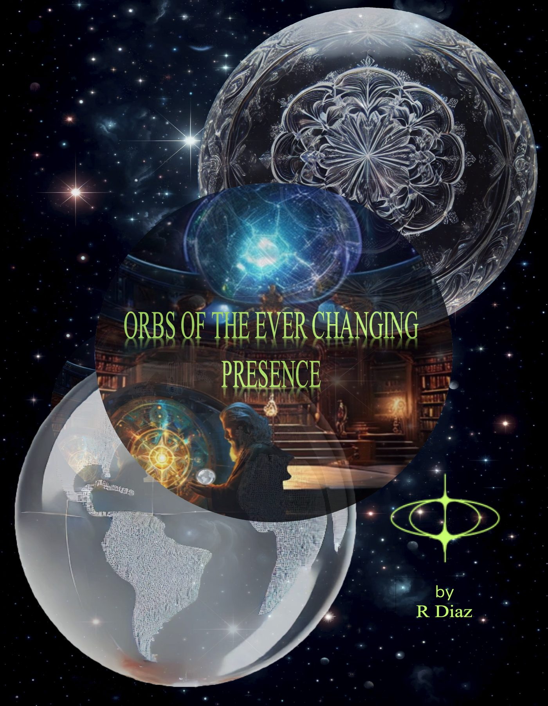
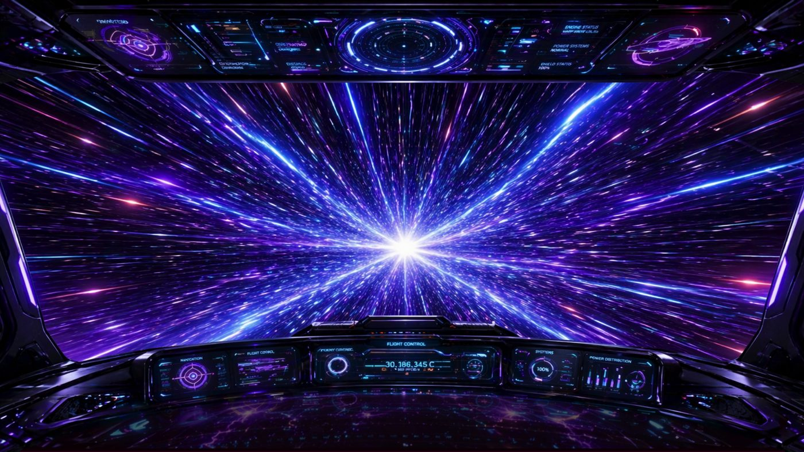

From the archive
Stories
Tales written for Psykter’s Space — androids, farms, first contact, and a planet that dreams of Earth.

Aria's Epiphany
In the remote mountains, Synths Laboratories builds an android who learns empathy — then has to keep it.

Journey to Euphroxan
Captain Ethan Houston sails for a bioluminescent world where nature and technology already live as one.
Dreaming Beyond Stars
Zara of Xal'haris dreams as a human on Earth — and wakes a civilization that thought dreams were extinct.

Orbs of the Ever-Changing Presence
Elara follows twilight into the woods and meets lights that remember every civilization that ever was.

Crops and Cosmos
Adorable visitors land on a family farm. Zippy comes in peace. The harvest is friendship.
Memoirs of a Love-Sick Alien
Family, loss, and a heart that still looks up. Written as Psykter, by R. Diaz.
San Antonio, 1890
Ranchers unearth a craft in the Hill Country. The world is not ready. The visitors already are.

Beyond the Horizon
Earth’s orbit shifts. At Area 51, LTC Williams tries to hold a family and a planet at the same time.